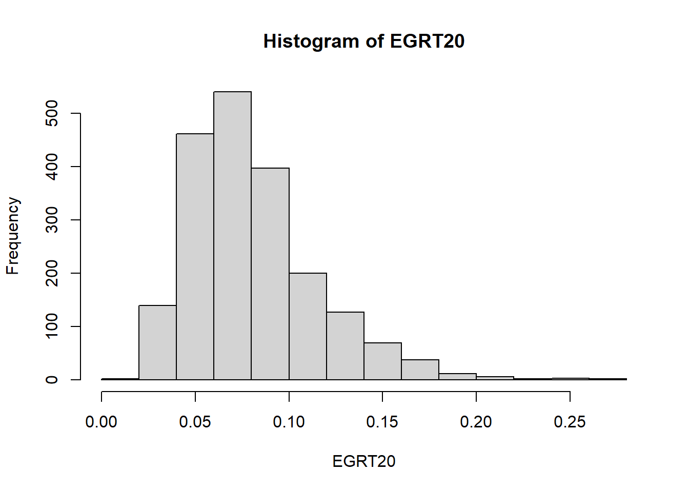
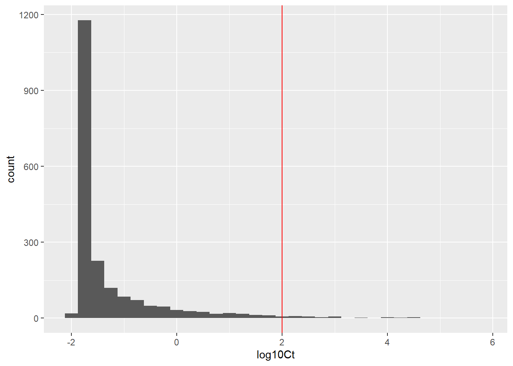

library(ggplot2)Monte Carlo simulation - listeria
Reproducing
It turns out that this is a good exericse is the challenges that can come from reproducing the work by someone else. It is also a way to learn the importance of documentation.
Model
Ullrika have said - “Don’t trust anyone - anyone can be wrong”. It also applies to her.
In this case the model equation in the study material has an error: \(EGRT(T\cdot t)\) should be \(EGRT(T)\cdot t\)
The model consists of two equations:
\[C(t)=\frac{C_{max}}{1+(C_{max}/C(0)-1) \cdot \exp(-EGR(T)\cdot t)}\] \[EGR(T)=EGR(5)\left(\frac{T-T_{min}}{5-T_{min}}\right)^2\] State variables: \(C(t)\)
Parameters: \(EGRT(5)\) and \(C(0)\) are uncertain. \(C_{max}\) and \(T_{min}\) are set to be fixed.
Other assessment values: \(t = 2.5\)
Set up and run Monte Carlo simulation
# Uncertainty in parameters
niter = 2000
#log10C0 <- rnorm(niter, -1.19, 0.968) # used in class, values comes from Maartens simulation
log10C0 <- rbeta(niter, 0.194, 3.177)*(7--1.69)+-1.69 # taken from table C.4 RTE category Cheese. This table presents fits of generalised beta distribution
C0 = 10^log10C0
#EGRT20 <- rnorm(niter,0.137,0.0137) # used in classParameters in table 2 are given as mean and sd of a lognormal distribution on the real-space scale. In R the parametrisation of the lognormal is done through the mean and standard deviation on the logged scale. we have to transform the parameters to be able to generate random numbers.
From real-space to log-space:
\[\sigma^2 = \ln (1 + (s/m)^2)\] \[\mu = \ln(m)-\sigma^2/2\] In case someone wants to do it the other way around: From log-space to real-space:
\[m=e^{\mu+\sigma^2/2}\]
\[s = m \cdot \sqrt{e^{\sigma^2}-1}\]
# draw sample from EGRT5
m = 0.0117 # from table 2
s = 0.00816 # from table 2
sigma2 = log10(1+(s/m)^2)
sigma=sqrt(sigma2)
mu=log10(m)-sigma2/2
EGRT5 <- rlnorm(niter,mu,sigma)
# transform to EGRT20
Tmin = -1.18
EGRT20 = EGRT5*(20-Tmin)/(5-Tmin)^2 # equation 8
#EGRT = 0.137 # point estimate
log10Cmax = 7.83
Cmax = 10^log10Cmax
t = 2.5
# Output
Ct = Cmax/(1+(Cmax/C0)-1)*exp(-EGRT20*t)
log10Ct = log10(Ct)Confirm sample statistics
mean(log10C0)[1] -1.178568sd(log10C0)[1] 0.9715562mean(EGRT20)[1] 0.08097771hist(EGRT20)
Summarise and visualise uncertainty
hist(Ct)df_MC <- data.frame(log10Ct = log10Ct)
ggplot(df_MC, aes(x = log10Ct)) +
geom_histogram(binwidth = 0.25) +
geom_vline(xintercept=2,colour = "red")
mean(log10Ct)[1] -1.26648910^mean(log10Ct)[1] 0.05413912quantile(log10(Ct),probs=c(0.05,0.95)) # 90% prob int 5% 95%
-1.8237463 0.9171346 mean(log10(Ct)) # mean considering uncertainty[1] -1.266489mean(log10(Ct)<2)[1] 0.981I am 98.1% certain that your cheese is safe.